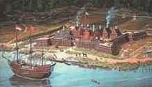
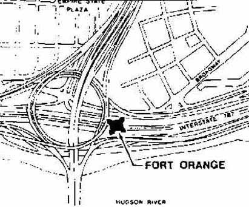

|
Fort Orange Fort Orange is the name given to the fur trading post erected in 1624 on the west bank of the Hudson just south of the future site of Albany. The Dutch West India Company built similar structures to serve as their headquarters in many parts of their worldwide trading empire. The small, wooden structure with four bastions shown below was to be the West India Company's official outpost in the upper Hudson Region.  The Company staffed the "fort" with employees to conduct business, kept a small detachment of soldiers to protect the outpost and maintain order, and sponsored a number of farmers to provide food and other necessities. Some of each of those groups of settlers lived in small huts within the fort. The others lived in separate structures located outside the walls. The Company staffed the "fort" with employees to conduct business, kept a small detachment of soldiers to protect the outpost and maintain order, and sponsored a number of farmers to provide food and other necessities. Some of each of those groups of settlers lived in small huts within the fort. The others lived in separate structures located outside the walls.
However, before long, employees, soldiers, and farmers alike realized the great potential of bartering for furs and many of those living in the area committed their best energies to securing beaver and other skins from Native American hunters. By 1639, the Company realized the folly of trying to maintain its fur trading monopoly and instead sought to tax the furs exported from Fort Orange. By the 1640s, these new traders had come together in a community of interest surrounding but mostly north of the fort. In 1652, a court was created to help structure activities in the fledgling, multi-purpose settlement called Beverwyck. By that time, the almost annual spring overflow of the Hudson had taken its toll on flood plain-sited Fort Orange. As the fur trade became less and less profitable to the West India Company, the company committed fewer resources to maintaining Fort Orange. During the late 1640s, New Netherland Governor Petrus Stuyvesant sought to rehabilitate the fort as a military outpost and also granted permits to individual traders to build within the fort's walls. However, despite considerable refurbishing, his efforts were short-lived. With the emergence of Beverwyck and another devastating flood in 1654, this initial center of settlement was all but abandoned by the end of the decade. In 1664, New Netherland fell to the English and Beverwyck was renamed "Albany." Fort Orange fell into further decay as the English looked instead to a more elevated location for their headquarters. By 1676, the English had built a new fort overlooking the community on upper State Street. As time passed, the image of Fort Orange faded from view. In 1687, the new city of Albany sold the land around the old fort to the Dutch Reformed Church for use as pastureland. The ruins remained. During the eighteenth century it was shown on contemporary maps and labeled "ruins of an Old Fort." By 1769, traveler Richard Smith observed that there was "nothing to be seen of Fort Orange . . . but the Ditch which surrounded it."  During the 1790s, a large home (called a "mansion") and a number of outbuildings were built on the site for Simeon De Witt - afterwards surveyor-general of New York State. Following De Witt's death, the property then became the "Fort Orange Hotel" and was a well-known establishment opposite the steamboat landing. It burned in the fire of 1848 and a new Fort Orange Hotel was built on the site afterwards. In 1886, a bronze tablet was erected on the site to commemorate the bicentennial of Albany's chartering. It was moved to its present location perhaps during railroad construction or the building of the Dunn Memorial Bridge in 1930. In 1971, archeological excavations preceding highway construction unearthed a large portion of the original fort. In 1993, the location was declared a National Historical Landmark. An exposition on"Fort Orange" is basic to any comprehensive history of Albany. Although first hand study of Albany's original incarnation is beyond the scope of the Colonial Albany Social History Project, still this section must be more fully developed.
Historical artist Len Tantillo's first visualization of Huey's scholarship in a painting entitled "Fort Orange, 1635" offers the most engaging access to this historical icon. Almost three decades later, it has become a standard feature of American History textbooks. A more recent version of the subject offers another interesting even inspiring perspective. More on all of this in the future! Detail showing location of Fort Orange from a seventeenth-century map in the Library of Congress. The map detail and discussion of West India Company "forts" are from Visions of New York State: The Historical Art of L. F. Tantillo (Wappingers Falls, NY, 1986), 46-47. These farmers were called "Walloons" - French-speaking Protestants from the Spanish Netherlands. Thirty families were sent to New Netherland with perhaps half of them finding their way to the vicinity of Fort Orange. Colonial Albany's De Foreest (Defreest) family was part of that group. Drawing showing location of Fort Orange on a modern sketch of Albany's riverfront arterial. Printed in Tantillo, Visions of New York State, 46. first posted: 2000; last revised 4/25/15 |
{kind=link}